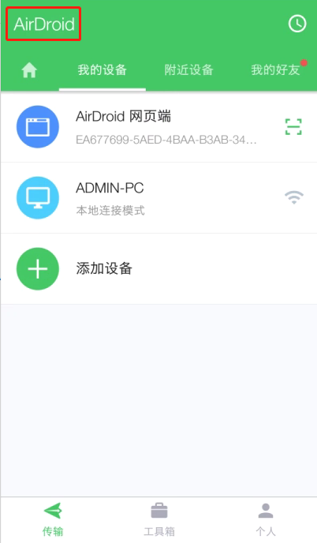
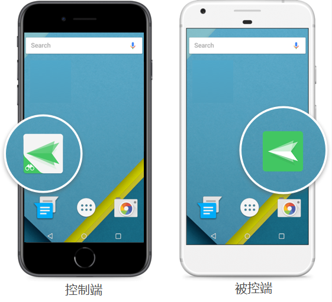

AirMirror 演进史：从"手机控手机"到双线并行的六年
我关注 AirMirror 很久了。最近翻它的产品文档时，突然意识到这个 App 的两条业务线其实藏着一条清晰的成长轨迹——从最初一个简单的远程控制客户端，走到今天覆盖远程访问和远程协助双场景的完整方案，中间每一步都踩在用户真实痛点上。
现状：一个 App，两条路
现在打开 AirMirror，第一眼会看到两个入口：远程访问和远程协助。这个双模块设计已经稳定了好一阵子，很多新用户甚至以为它从一开始就是这样。但我清楚记得早年的 AirMirror 只有一条业务线——远程访问，连远程协助的影子都没有。
远程访问模块的逻辑很纯粹：控制端和被控端登录同一个 AirDroid 账号，设备自动发现，一次绑定长期有效。打开后设备列表直接列出所有已登录账号的设备，绿色圆点代表在线，点进去就是完整的远程控制界面。远程相机、屏幕镜像这些功能都挂在这个模块下。

远程协助模块是后来加的，思路完全不同：不用账号共享，被控端装一个轻量的 AirDroid Remote Support，控制端输入 9 位连接码就能发起会话。被控端是陌生人？对方不想注册账号？设备借你用十分钟就还？这些场景下远程协助才是正确打开方式。
AirMirror文档里把这两个模块的分界线总结成一句话：设备是你的 → 远程访问；设备是别人的 → 远程协助。这条分界线贯穿了账号体系、连接方式、权限模型的所有差异，也是 AirMirror 六年来最重要的一次产品决策——它没有在"哪个模式更好"里纠结，而是两条线并行，让用户按场景选。
来路：从 AirDroid 里长出来的独立 App
AirMirror 不是凭空冒出来的。它的前身可以追溯到 AirDroid 个人版里的"远程控制"功能——那时候用电脑端的 AirDroid Web 或桌面客户端就能远程操作手机，体验还不错，但有一个痛点：控制端必须是电脑。
最早的 AirMirror 解决的就是这个问题。它把远程控制能力从 AirDroid 的客户端里拆出来，做成一个移动端专属的控制端 App——从官网的描述来看，定位非常清晰：让你用一台 Android 手机去远程操作另一台 Android 设备。不用开电脑，不用装桌面客户端，掏出手机就能连。

这个定位在当时是个空白地带。向日葵、ToDesk 这些老牌远控主打电脑端，移动端口只是辅助；AirDroid Cast 主打投屏不涉及远程控制；而 AirDroid 个人版本身也把"手机控手机"当作次要场景。AirMirror 就卡进了这个缝隙里——手机端的远程客户端，用手机管手机。
早期版本的功能其实很收敛：远程控制、远程相机、屏幕镜像，三大核心功能一个不少，但也没多什么花活。连接方式只有账号共享一种——控制端和被控端登同一个 AirDroid 账号，设备列表自动同步。这套模型简单有效，但有一个明显的短板：它只适用于"设备都是你的"场景。
当用户想帮父母设置手机、帮同事排查 App 崩溃、给客户演示功能时，账号共享的模型就显得笨重了。你不可能让父母为了修个手机去注册 AirDroid 账号、开启远程控制开关、再把密码告诉你。这条反馈从社区里汇上来，催生了 AirMirror 的第二个模块——远程协助。
远程协助的设计几乎是完全相反的思路：被控端装一个只有几 MB 的轻量 App，从下载就能拿到，不用注册，打开就显示 9 位连接码。控制端输入连接码，被控端点一下"接受"，会话就建立了。每次会话临时生成凭证，结束即失效，不需要长期信任关系。
这个模块的加入让 AirMirror 的覆盖面瞬间扩大。它不再只是多设备爱好者的工具，还能服务 IT 支持团队、客服售后、远程讲师这些商用场景。文档里的场景矩阵现在能列出个人用户、企业与商用两大类、十几种具体场景，靠的就是这条新业务线。
规律：团队一直在死磕什么
从迭代节奏里能看出 AirMirror 团队的优先级。他们一直在死磕两件事：连接的可靠性和系统权限的适配。
连接可靠性这件事，从设备列表自动发现的设计就能看出来。AirMirror 不做手动配对，也不存本地缓存，设备列表完全从云端拉。这个设计的好处是用户不用手动维护连接关系，但代价是对网络和 AirDroid 服务端的依赖很强。文档里专门有一章「设备列表不显示排查」，列了四大根因、十几个排查步骤，还配了完整的排查流程图——这恰恰说明连接可靠性是用户高频遇到的痛点。
系统权限适配是另一个无底洞。Android 的权限模型在近几个版本里收紧得厉害，悬浮窗、后台自启动、辅助权限这些远程控制必需的权限，在小米、OPPO、华为等国产 ROM 上都需要手动授权。被控端第一次登录 AirDroid 个人版时，引导流程里要过五六道权限关卡，任何一步漏了都会导致后续功能失灵。文档里有「系统与厂商适配」组专门讲各家 ROM 的后台保持设置，这不是锦上添花的内容，而是远程控制能不能用的生死线。
反过来看，什么事情他们一直没怎么碰？iOS 被控端的远程控制能力。文档里直接写死了"远程访问模块仅支持 Android 被控端，远程协助模块支持 iOS 被控端但只能屏幕共享+手势引导+语音聊天，不能真正远程点按 iOS 屏幕"。iOS 的系统限制是客观存在的，但从另一个角度说，团队也没有在这个方向上反复试错、绕弯子。他们承认边界、把精力集中在 Android 生态里做深做透，这是一个很务实的取舍。
还有一件他们没碰的事：多端控制。AirMirror 的控制端始终围绕 Android 和 iOS 移动设备，没有做桌面端控制客户端。这可能是一个有意的决定——如果要覆盖桌面端，就会和向日葵、ToDesk 这些老牌玩家正面竞争，而"手机控手机"这个定位至今还是 AirMirror 的独家领地。
预判：照这个路线，下一步大概率是什么
我对 AirMirror 下一步走向有三个猜测，都是从它的迭代规律推出来的，不是官方口径。
第一个猜测是远程协助模块的免费限额会逐步放开。现在远程协助每天有 2 分钟的免费限额，对于偶尔帮家人修个手机的场景来说刚刚够用，但对于 IT 支持团队这种高频使用场景，2 分钟显然不够。团队如果想让远程协助成为真正的商用方案，放开限额或推出更灵活的按次计费是早晚的事。
第二个猜测是远程访问和远程协助的边界会进一步模糊。现在两个模块是完全独立的入口、独立的连接方式、独立的设备列表。但用户的真实场景往往不是非此即彼——比如我自己的备用机可能有时候需要别人帮我看看，这时候用远程协助更方便，但设备本身已经在远程访问的设备列表里了。如果能在一个界面里同时看到两种连接方式、按场景切换，体验会更顺滑。
第三个猜测是更多硬件生态的整合。文档里提到远程相机功能可以把旧 Android 手机改造成监控摄像头，这已经是一个硬件延伸的方向。如果 AirMirror 团队能和更多 Android 生态厂商合作——比如让电视、平板、甚至车载系统都能作为被控端接入，远程访问的想象空间会大很多。
当然这些都是猜测。AirMirror 六年来的发展给我的最大感受是：团队的决策一直很克制，不在非核心方向上瞎折腾。远程协助模块加了，但没有因此削弱远程访问的投入；Android 生态做深了，没有在 iOS 上做无用功。如果这个节奏能保持下去，AirMirror 还能在"手机远程客户端"这个独家领地里站稳相当一段时间。
这套资料我同步维护了三份，方便不同环境下查阅：GitHub 仓库的网页版分类下有完整的文档目录，Gitee 镜像适合国内网络环境快速访问，GitCode 备份则作为额外的存档。三个仓库的内容保持一致，选哪个顺手就看你自己。